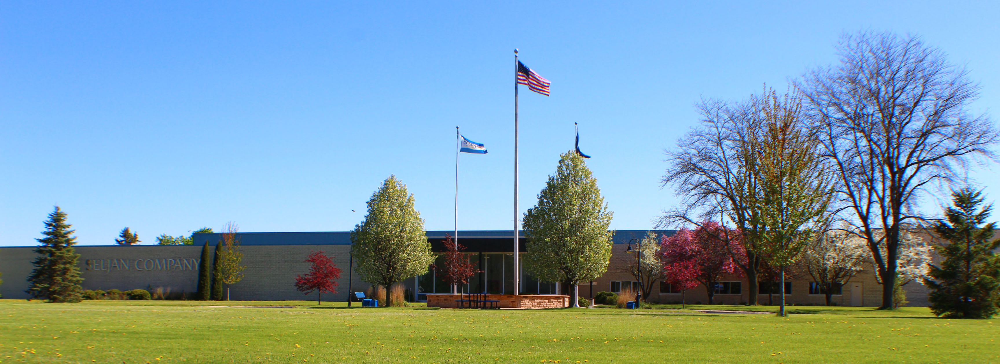
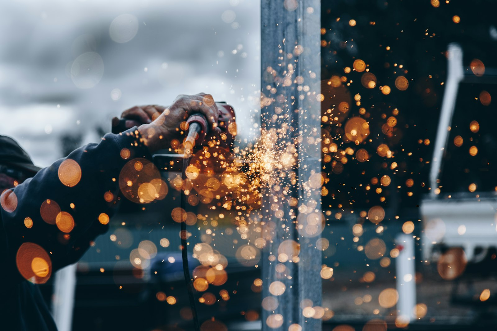
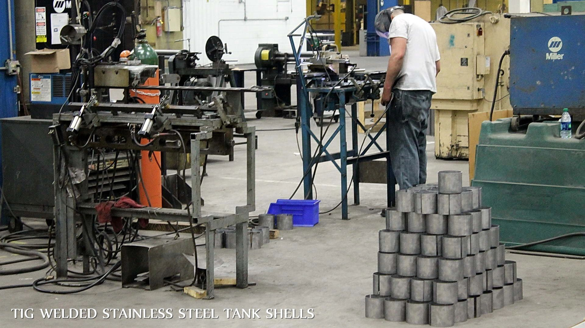

01
In-house tooling
Journeyman toolmakers design and build dies, fixtures, and rotomolds so production stays on schedule.

Lake Mills, Wisconsin · Est. 1967
Seljan Company
From tool & die roots to full-scale fabrication and molding — engineered parts, built to last.
Manufacturing
Metals and plastics run side by side — design, tooling, production, finishing, and shipping from our Lake Mills campus.
Capabilities
Capacity for long runs, complex geometries, and inventory staging — plant hours 24/6.
Journeyman toolmakers design and build dies, fixtures, and rotomolds so production stays on schedule.
From SolidWorks design through fabrication, molding, graphics, and powder coat — all under one roof.
Robotic welding and finishing cells, overhead cranes, and steel inventory for high-volume work.
Inside the plant
A look at the departments that turn drawings into finished parts.





In motion
Process footage that shows how metal and plastic parts take shape on the floor.
Metals · Sheet metal & CNC
Metals · Fab & welding shop
Plastics · Injection molding
Plastics · Rotational molding
Next step